1. Planificación Financiera: Una Introducción Estratégica
Las finanzas —tanto en el ámbito patrimonial como en el corporativo— constituyen el eje medular de acción para satisfacer múltiples necesidades jerarquizadas con recursos limitados y bajo condiciones de incertidumbre. Su gestión rigurosa es determinante para operar con solvencia en el presente, consolidar el desempeño en el corto plazo y sostener el crecimiento en el largo plazo. De esa necesidad de anticipar hoy el rumbo operativo y estratégico del negocio nace la Planificación Financiera.
En términos ejecutivos, la Planificación Financiera consiste en el diseño y estructuración del plan maestro que permite a una organización alcanzar sus metas y objetivos estratégicos una vez definidas su misión y su visión. El Plan Financiero traza la hoja de ruta cuantitativa y detalla las actividades, inversiones, fuentes de financiamiento, recursos operativos y plazos requeridos para materializar cada objetivo.
Lejos de limitarse a una proyección lineal o rígida, el proceso de Planificación Financiera proyecta en términos monetarios los resultados futuros construyendo un abanico de escenarios (base, optimista y de estrés) que evalúan la sensibilidad del negocio frente a cambios en el entorno macroeconómico, cambiario, regulatorio, tributario o de mercado.
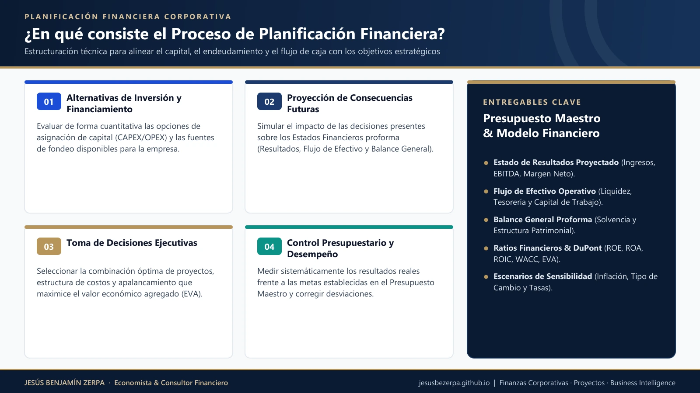
2. Las PYMES y la Planificación Financiera: Diagnóstico en la Región
Los estudios empíricos sobre la gestión financiera en el sector de las pequeñas y medianas empresas (PYMES) en América Latina revelan debilidades estructurales recurrentes. De acuerdo con un informe de Axa Seguros (México, 2016), cerca del 40% de las PYMES no recibe asesoría profesional al estructurar su planificación financiera; como consecuencia, ocho de cada diez empresas no superan los primeros dos años de operación, y el 43% de los cierres obedece directamente a deficiencias en la administración financiera.
De igual forma, el especialista en finanzas Raúl Cardona (2009), en su investigación titulada «Planificación financiera en las PYMES exportadoras: Caso de Antioquia, Colombia», concluye que las organizaciones analizadas presentan marcadas vulnerabilidades en la forma en que planifican sus decisiones de inversión, estructura de financiamiento y política de dividendos.
En el contexto venezolano, Adrián Guillermo (2018), en su trabajo de grado titulado «Planificación Financiera de Tesorería para el Flujo Tributario en el Sector Empresarial bajo Situación de Incertidumbre» —presentado para optar al título de Magíster en Administración de Empresas, mención Finanzas, en la Universidad de Carabobo—, demuestra que numerosas empresas manufactureras carecen de instrumentos formales de proyección que integren ventas, costos, activos, inversiones y carga tributaria bajo escenarios alternativos de producción y comercialización.
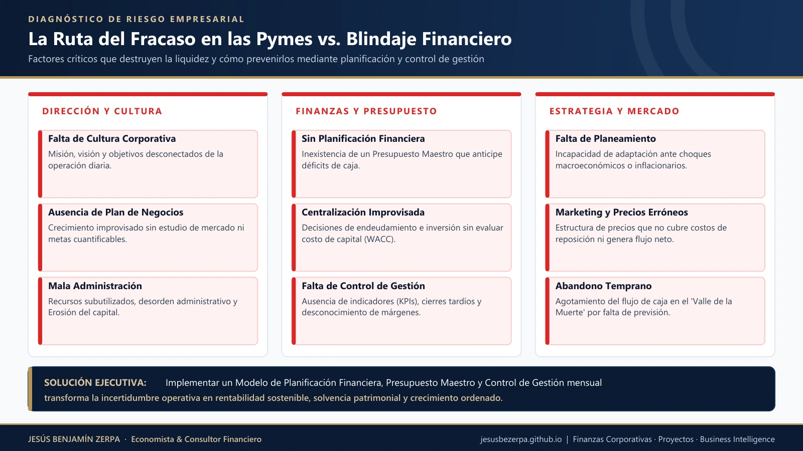
3. Razones Ejecutivas para Implementar la Planificación Financiera
La aceleración tecnológica y la competencia por cuota de mercado exigen contar con sistemas de información financiera que midan en tiempo real los resultados operativos y permitan reaccionar con agilidad ante desviaciones presupuestarias o choques externos, garantizando la asignación eficiente del capital.
En este sentido, la Planificación Financiera se posiciona como una herramienta indispensable para la alta dirección: modela escenarios futuros, articula los objetivos de corto plazo con la sostenibilidad de largo plazo y optimiza la toma de decisiones sobre composición de activos (CAPEX y capital de trabajo), estructura de pasivos y patrimonio, reestructuración de indicadores financieros y preservación del flujo de caja.
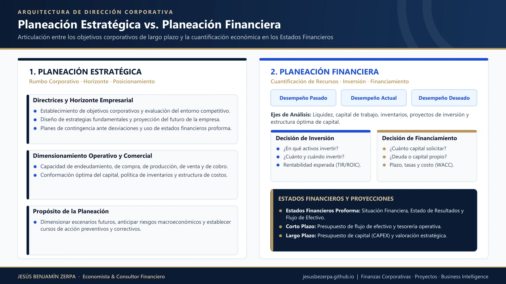
4. Objetivos e Importancia de la Planificación Financiera
Objetivos Fundamentales
- Determinar los requerimientos de capital: Cuantificar las necesidades de fondos a corto y largo plazo en función de los activos fijos, el capital de trabajo operativo, los gastos comerciales y los planes de expansión.
- Definir la estructura óptima de capital: Establecer la composición ideal entre deuda y patrimonio (apalancamiento financiero) tanto en el corto como en el largo plazo, minimizando el costo promedio ponderado de capital (WACC).
- Establecer políticas financieras y de control: Normar la administración de tesorería, políticas de crédito y cobranza, rotación de inventarios, endeudamiento y control de gastos.
- Maximizar el rendimiento sobre la inversión (ROI / ROIC): Garantizar que los recursos financieros escasos se asignen a las actividades de mayor generación de valor con el menor costo financiero posible.
Importancia en la Sostenibilidad Corporativa
- Asegura la disponibilidad oportuna de fondos operativos y estratégicos.
- Preserva el equilibrio entre entradas y salidas de efectivo para sostener la solvencia.
- Fortalece la credibilidad ante instituciones bancarias, inversionistas y proveedores de capital.
- Viabiliza programas de crecimiento y expansión sobre bases cuantitativas verificables.
- Mitiga el impacto de la volatilidad cambiaria, inflacionaria y de mercado mediante reservas y coberturas planificadas.
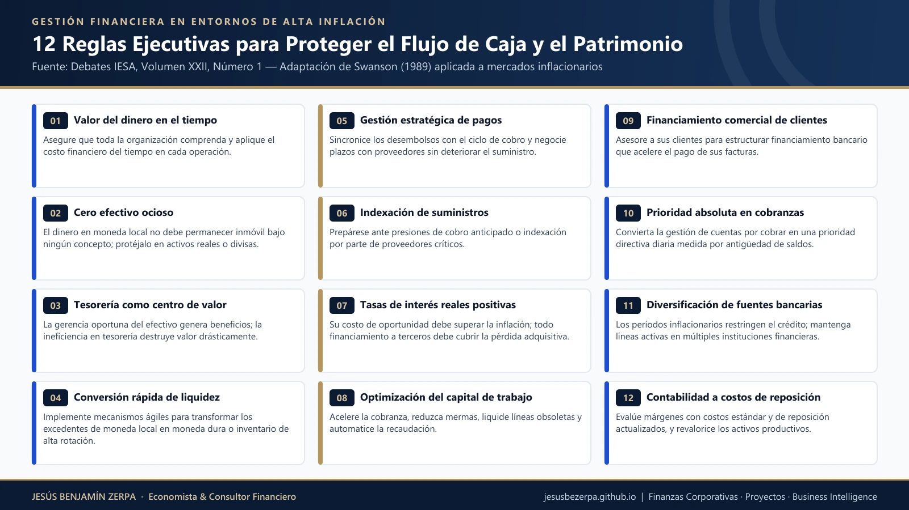
5. Metodología del Servicio: Modelo de Nissenbaum, Raasch & Ratner (Ernst & Young)
Cuando abordamos la Planificación Financiera de una empresa o emprendimiento, partimos de un diagnóstico riguroso de su situación actual a través de los estados financieros históricos, integramos los lineamientos de la planificación estratégica y estructuramos un plan escalonado con metas verificables.
A lo largo de mi experiencia liderando planes financieros corporativos he comprobado que no existe un esquema rígido único: el modelo debe evolucionar con la organización. Entre los marcos metodológicos probados por firmas globales y escuelas de negocios, el modelo propuesto por Nissenbaum, Raasch & Ratner (2004, Ernst & Young) destaca por su capacidad de adaptación a entornos complejos, dividiendo el proceso en 7 pasos secuenciales donde el entregable de cada etapa alimenta directamente la siguiente:
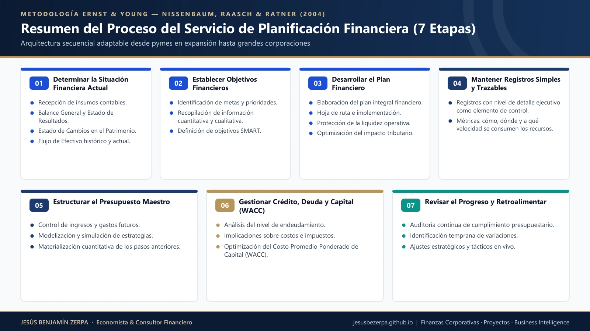
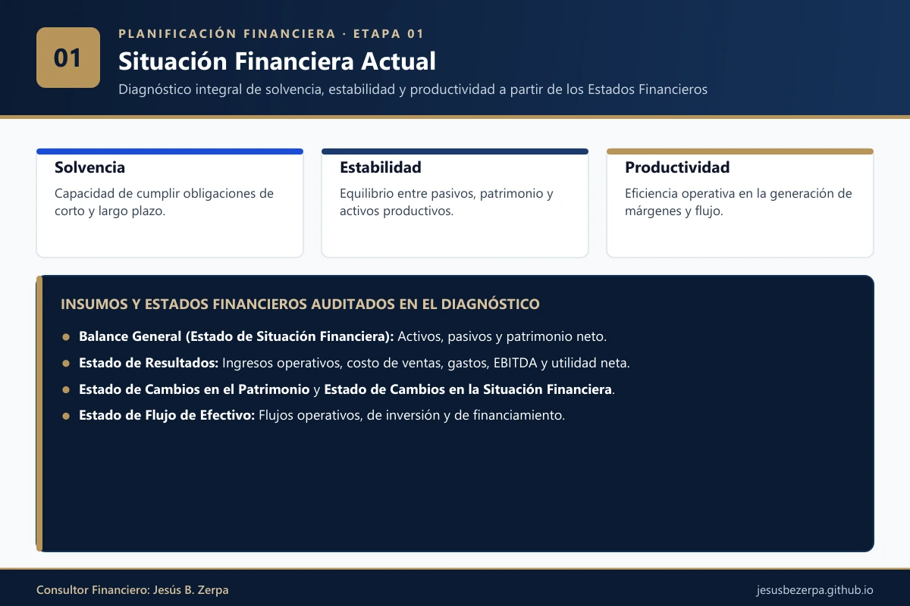
Identificación y medición precisa de la posición financiera actual de la organización, fundamentada en el análisis del patrimonio neto, la estructura de costos y los flujos de caja históricos como insumo base del proceso.
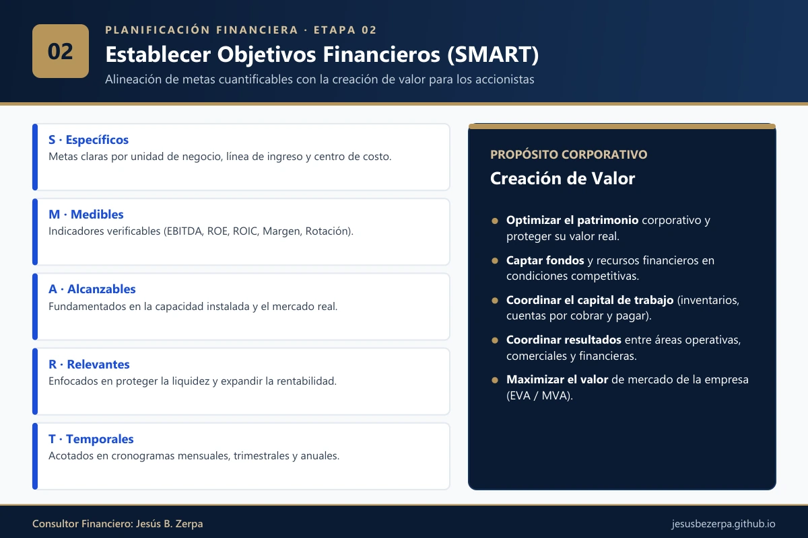
Definición y jerarquización de las metas financieras de corto, mediano y largo plazo por nivel de prioridad estratégica, estableciendo indicadores cuantitativos y plazos de cumplimiento.
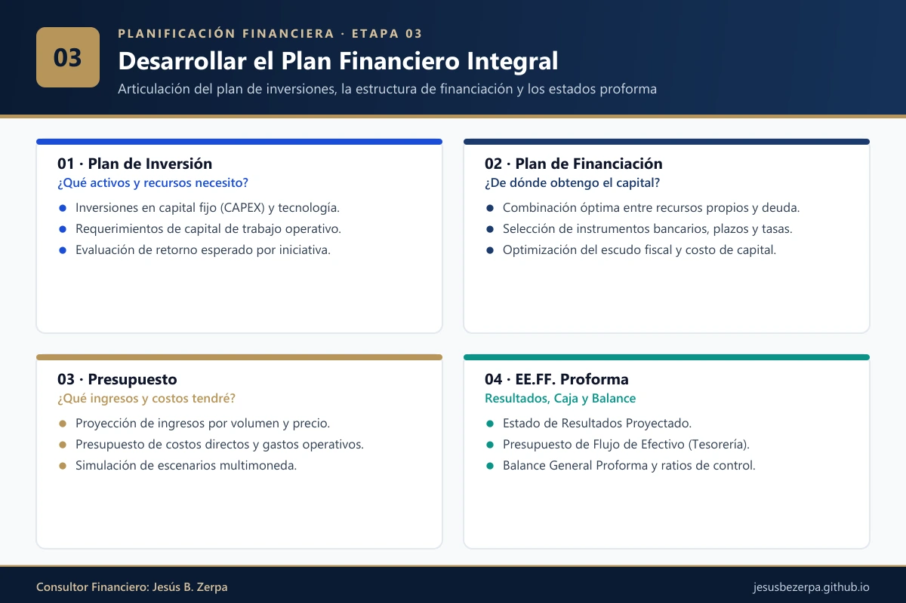
Concepción de un plan financiero flexible que priorice la preservación de la liquidez, optimice la carga tributaria y cuente con capacidad de adaptación ante variaciones imprevistas del entorno.
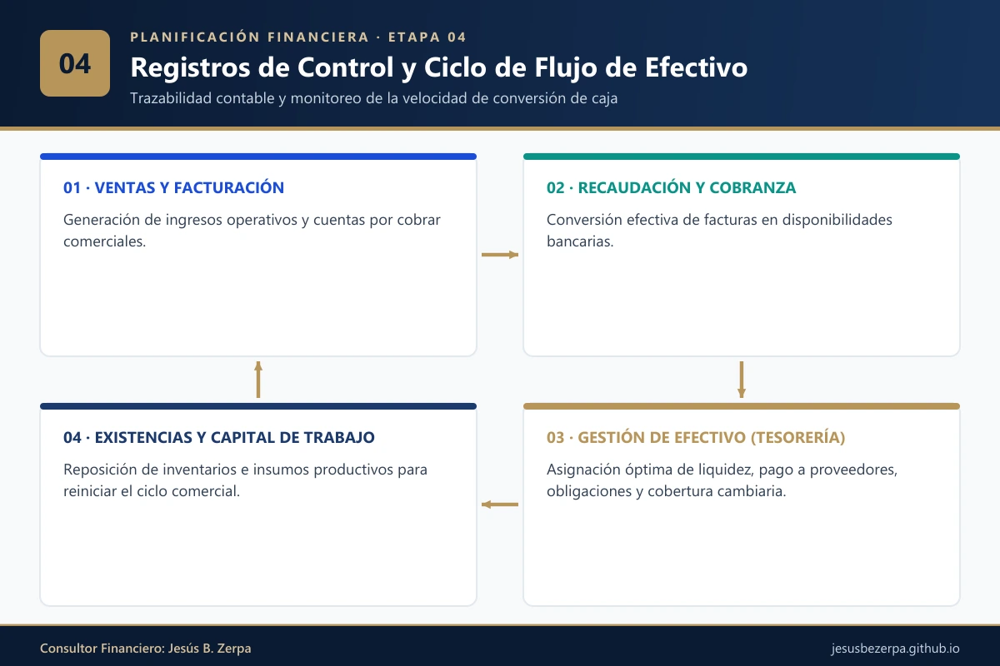
Estructuración de registros contables y centros de costos ágiles pero con el nivel de desagregación necesario para auditar cómo, dónde y a qué velocidad se generan y consumen los recursos monetarios.
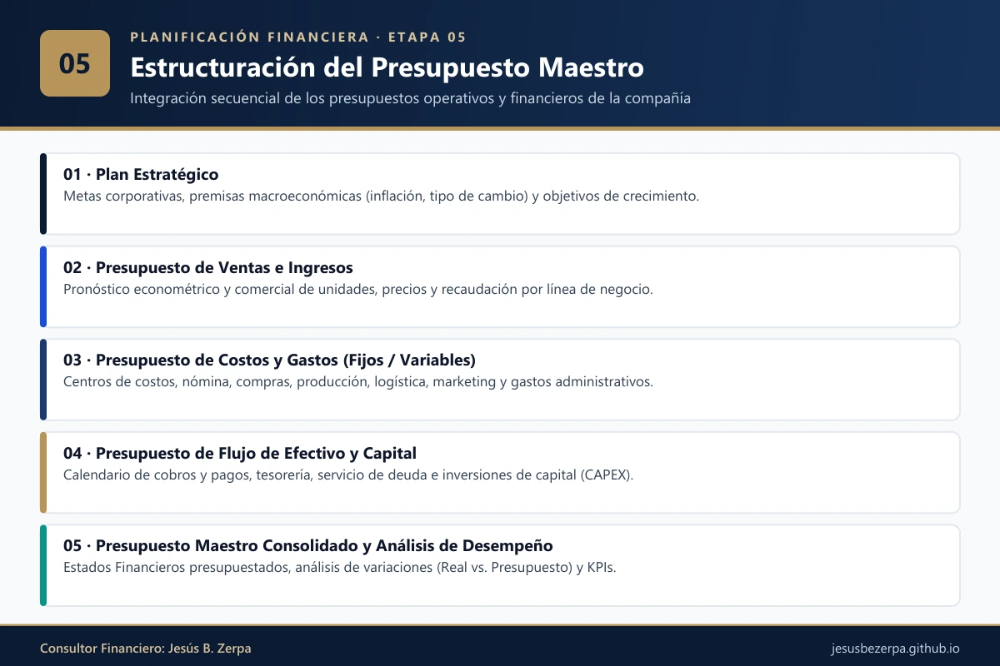
Formulación del Presupuesto Maestro (Estado de Resultados, Flujo de Efectivo y Balance General proyectados) como referente obligatorio para el control continuo de ingresos, costos, gastos e inversiones.
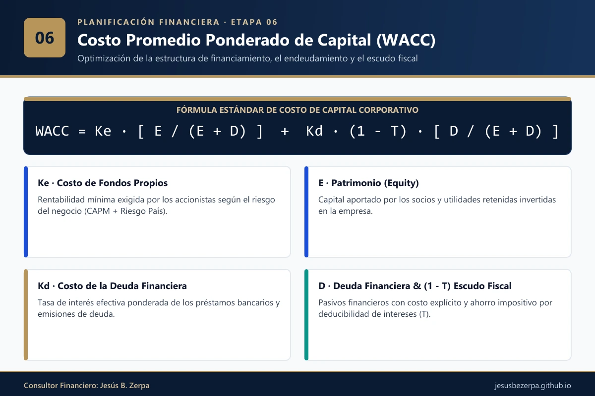
Diseño de políticas para administrar déficits estacionales de efectivo y evaluar la capacidad de endeudamiento, analizando el costo financiero efectivo y el escudo fiscal de la deuda.
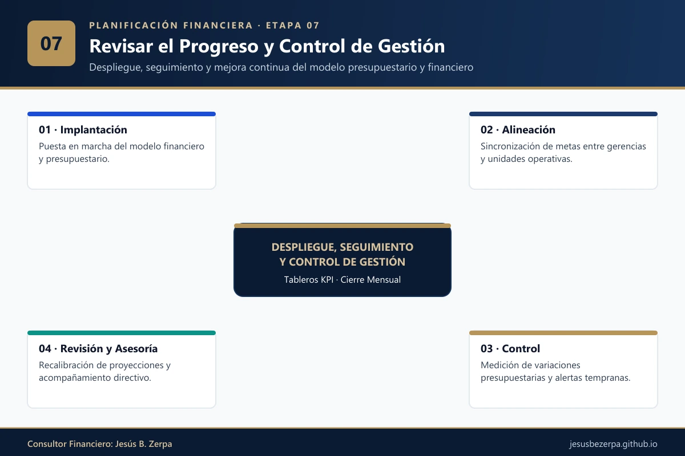
Monitoreo periódico de la ejecución presupuestaria frente al plan (análisis de variaciones precio-volumen-eficiencia) para detectar desviaciones tempranas y aplicar medidas correctivas oportunas.
6. Propuesta de Valor del Servicio
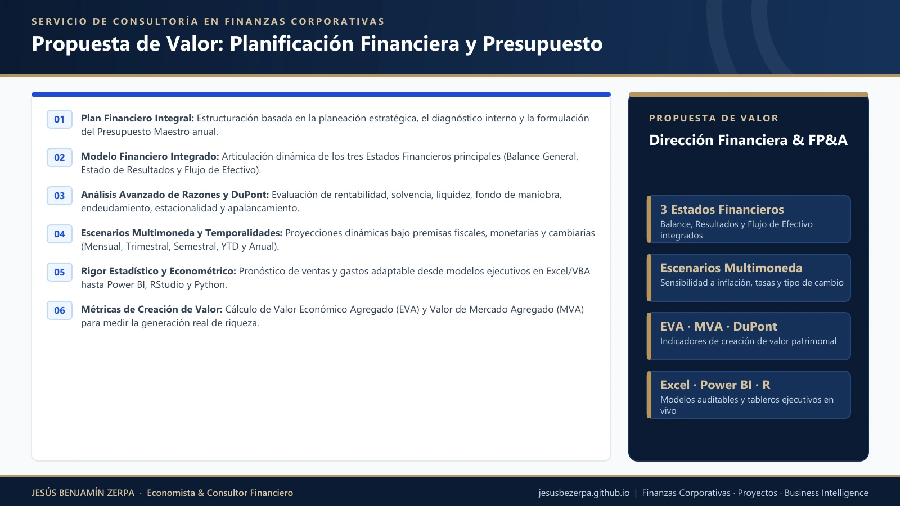